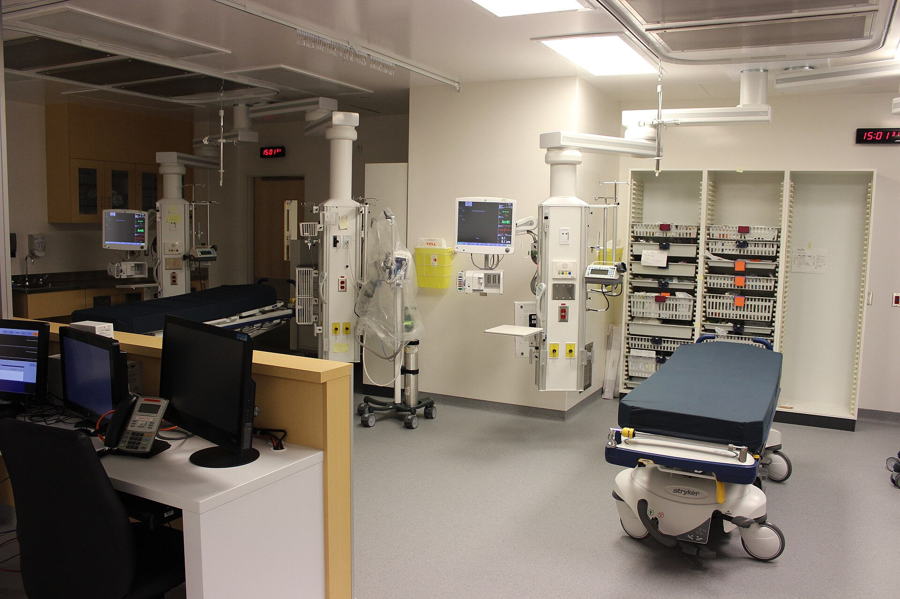

v3.7.2 更新 / Updated
急診復甦室空間參考 / Emergency resuscitation room reference

觀察急救床、監視器、供氣設備與床邊動線。
Observe the resuscitation beds, monitors, gas outlets and space around each bed.
Calvin411 · CC BY-SA 4.0
原始來源與授權 / Source and licence ↗
檔案與變更紀錄 / File details
CHUM Emergency Level Resuscitation.jpg
2017-09-23 (source description)
Wikimedia-provided 1920-pixel thumbnail; no cropping, retouching or generative modification.
SHA-256: 484d790ca0aa475d1a0930dbb50d360a7dbc871165e4522b041ecc82b9b6a3a0